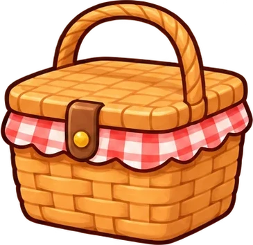

Hello, everyone!
Mimi's Picnic Basket · I like food!
▶ Hello! Hello! SongWhat's this?
Listen for rice and eggs!
Shop 1

Shop 2
What do you like?
Mimi's Picnic Basket · I like food!
▶ Hello! Hello! SongWhat's this?
Listen for rice and eggs!

What do you like?